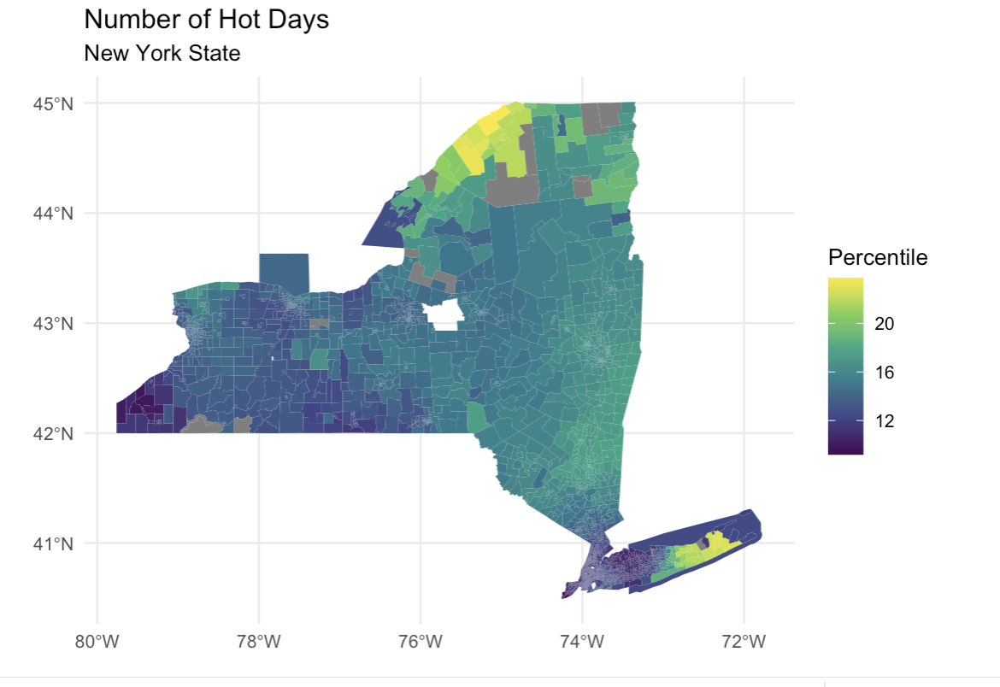
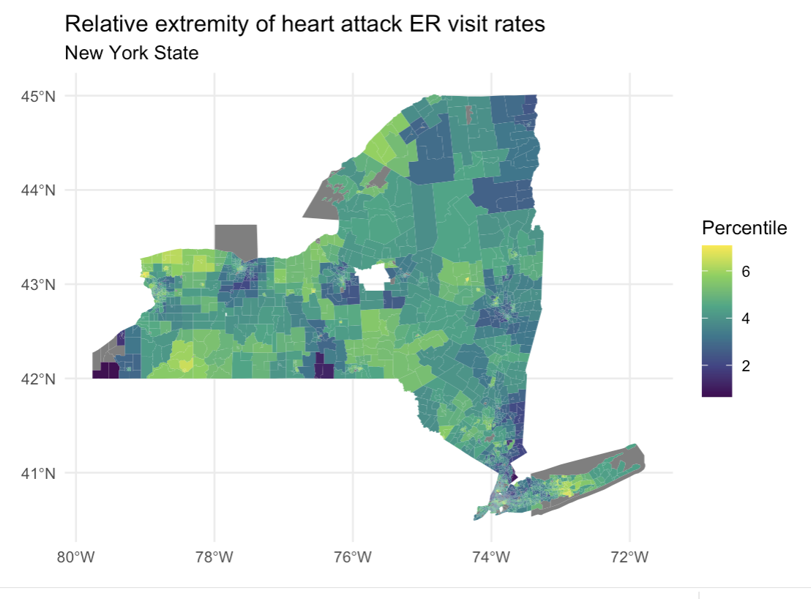

Remote Sensing: Tracking Fires, Conflict, and Agricultural Loss in Syria
Part One: Agricultural Loss
In 2018, Turkey and allied forces occupied Afrin, leading to widespread reports of property seizures and agricultural destruction. Given these dynamics, my project asks: How has Afrin’s landscape, especially its olive orchards, changed since the occupation? And where can we detect signs of degradation? my project has two objectives:
(1) Map land cover in Afrin in 2016, before major occupation events, with a particular focus on locating orchards.
(2) Assess orchard degradation through 2024 by tracking vegetation health and mapping clusters of decline.
The first thing that I did was map out my main variables, confirming that there was a spatial element to explore.


Looking for the Relationship
Using a Geographically Weighted Regression (GWR), the results of my project suggested that communities with higher percentages of outdoor workers were at higher risk of poor health outcomes, and that this was worse in areas that had poor environmental conditions such as low tree cover and poor air quality. The type of model that I used corrected for spatial error, subsuming some other geography-related effects.
I then mapped out the coefficients by census tract, aiming to understand where this relationship is the strongest.
Tech Stack
GIS, R (for statistical analysis and regression), and HTML/CSS for documentation.